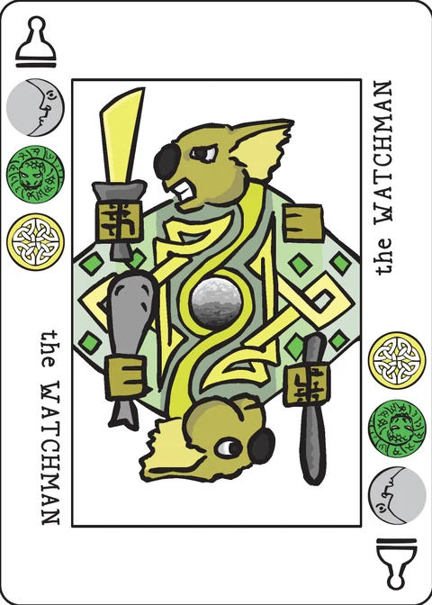

Fifes and Drums
a hidden-goal game of retreat for 2 players
sudden but inevitable betrayal or the most efficient rout
It is the last battle in the final campaign of a mad but brilliant general. Six companies of tired soldiers are all that stands between him and the advancing enemy. He doesn't realize it yet, but there is no way for him to win.
Fortunately, you are not playing the general in this game. Unfortunately, you're not the advancing army either.
Instead, you play a member of the general's staff. You were offered money by captains of a few of the remaining companies. Maneuver them off the field before the inevitable defeat, and they will pay you handsomely. So cue the fifes and drums! Jigger the retreat orders to put your cronies as far from danger as possible.
Of course, everybody else on the general's staff was bribed to put their cronies ahead of yours.
Components: You will need a complete 45-card Decktet, including all of the extended deck cards. In addition, you will need a battlefield track and six unit tokens. The track should be 45 spaces long, although most games won't need more that 25 or 30 spaces; you can draw one or borrow the point track from another board game. The tokens are each associated with one of the Decktet suits; you can use suit chips, coloured cubes, or somesuch.
Setup
Shuffle together the Pawns and Courts. Deal one facedown to each player. Each player may look at their card. The three suits on the card represent the three units which the player is trying to help. Set aside the remaining Pawns and Courts without looking at them.
Shuffle the basic deck. Take five cards without looking at them, shuffle the Excuse into that pile, and put it on the bottom of the deck. This forms the draw pile. (When the Excuse is turned over the game ends, so the game will go through most but perhaps not all of the draw pile.)
Deal five cards from the top of the draw pile, face up onto the table. These form the initial pool of possible orders.
All of the unit tokens begin on the first space of the battlefield track. This is in the shadow of the advancing enemy; the track leads away from the enemy and, perhaps, to safety.
Someone takes the first turn; play then alternates.
Game play
On your turn, you will select one card from the pool of possible orders. That card is played immediately and discarded. A new card is then flipped over to replace it in the pool.
Number cards, Aces, and Crowns work in different ways:
Number cards represent an order to retreat. You may move the two units represented by the suits on the card a total number of spaces equal to the rank of the card. You must move each unit at least one space.
Example: The 8 of Moons and Suns may be used to move the Moons token 6 spaces along the track (away from the advancing army) and the Suns token 2 spaces; or any combination of moves which totals 8 spaces.
An Ace represents a forced march order for a specific unit. Pick a direction along the track. Move the token represented by the suit of the Ace in the chosen direction until it reaches a space occupied by another token. Place the moving token in the occupied space. If there are no other unit tokens in the direction you selected, move the indicated unit token one space instead.
A Crown represents the General's desire for the unit to charge the enemy. If a Crown is present in the pool of orders and you select a matching number card, then that token is moved toward the beginning of the track the appropriate distance.
Example: The 7 of Waves and Wyrms is played while the Crown of Wyrms is one of the cards in the pool. The Waves token could be moved along the track 4 spaces and the Wyrms token back toward the beginning of the track 3 spaces; or any combination of moves which totals 7 spaces.
If you select and play the Crown, move the matching unit token back toward the beginning of the track until it reaches a space occupied by another unit token. (This is the same as playing an Ace, except that you do not get to choose a direction.)
If any play would move a token beyond the starting space on the battlefield track, leave the token in the first space instead.
After playing a card, turn over a card from the draw pile to replace it. If the new card is the Excuse, then the game ends immediately.
Scoring
When the Excuse is drawn, the enemy army surges forward. Units only have a chance if there are other units behind it, buying the ones further ahead time to escape.
Each player's score is the total value of the three unit tokens represented by the three suits on the Pawn or Crown that they were dealt at the beginning of the game. The player with the most points is the winner.
The unit token closest to the start of the track is worth zero points. If several unit tokens are in the same space closest to the start, each is worth zero.
The unit token next along the track is worth one point. If several tokens are in the same space, each is worth one.
The unit token next along the track is worth two, and so on. If all the tokens are in different spaces along the battlefield track, then the forwardmost token is worth five points.
Note that players will probably share some of the same scoring suits.
Variants
Fog of War: This variant adds uncertainty about which unit is which. It's untested, but should add some combination of bluffing and madness. Here's how it works:
Shuffle the draw pile, but do put the Excuse in it.
After receiving a goal card, each player draws three cards from the draw pile. If any of these cards is an Ace or Crown, they may reveal it and draw another. Once they have three number-ranked cards, they pick one and put the remaining two back on the draw pile.
Put any revealed Aces or Crowns back on the draw pile, shuffle it, and add the Excuse as per the usual rules. Play proceeds as normal until the Excuse is drawn.
After the Excuse is drawn but before points are counted, players reveal their secret number cards. Starting with the higher ranked card, swap the positions of the unit tokens corresponding to the two suits on the card. (If the two cards are the same rank, order won't matter.)
Then count score, following the usual rules.
The variant is totally untested but is sure to be crazy.
Note on this implementation
Two players, pass and play: one device, alternating turns. Your secret Pawn or Court is shown only during your own turn; between turns the screen is covered by a pass-the-device dialog, and your opponent's goal card is never rendered in the page at all.
The track: 45 spaces, drawn as a serpentine grid of eight columns that fits a phone screen. All six suit tokens start on space 1. The six Pawns and Courts that are set aside stay in the save file but are only shown (count only, never face up) until the game ends.
Running off the far end: the wiki only says what happens when a play would pass the starting space (the token stays on space 1). This app also stops a retreat on space 45 rather than letting a token run off the end of the track.
Charged units: when a Crown of a suit is in the pool, an order carrying that suit moves that unit toward the start. The app marks the charged units in the action panel; if both suits of a number card are charged, both units charge (each still moves at least one space, and the total still equals the rank).
Draws: the wiki says "the player with the most points is the winner" and does not say what happens on a tie. This app calls an equal total a draw and awards the win to nobody.
Not implemented: the Fog of War variant above is left out; it is marked untested on the wiki.
Credits
Original design by Gregory R. Payne; game development by P.D. Magnus. Playtesters included Nate Straight and Cristyn Magnus.
These rules are copied from the Fifes and Drums page of the Decktet wiki (page revision 6, 22 February 2018) so they can be read offline, under the wiki's CC BY-NC-SA 3.0 licence. Cards by P.D. Magnus, same licence.
Further reading: the BGG thread introducing the game · a track designed for the game